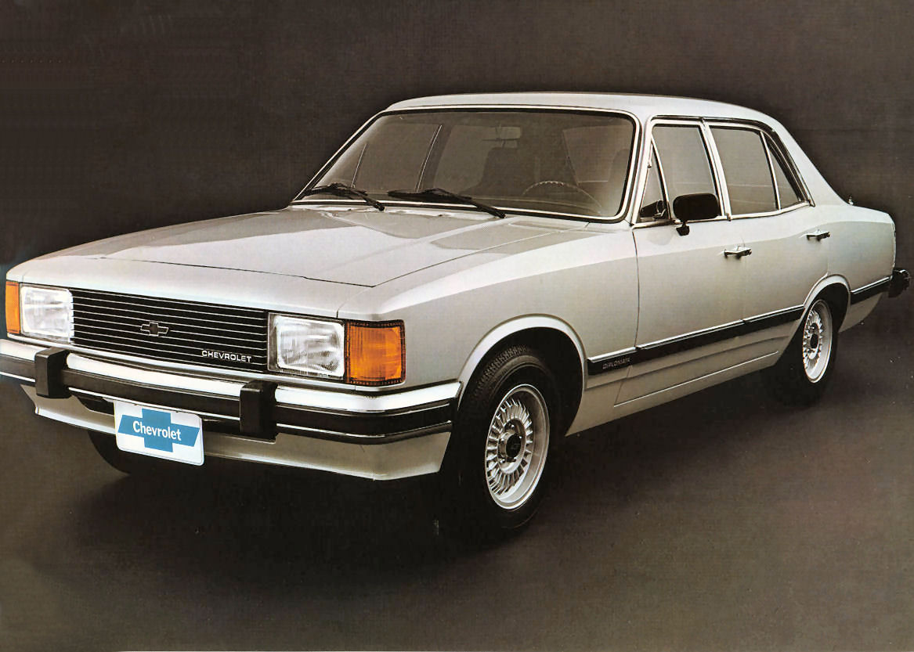

diplomata
Para o ano de 1980, a linha Opala passaria por uma remodelação mais profunda, assumindo formas mais retangulares nas lanternas dianteiras e traseiras. Embora recebesse uma reformulação externa, o interior dos veículo não seria reformulado para 1980, e sim 1981, também com desenho retangular, com exceção do painel de instrumentos, que manteve relógios circulares, junto com um novo volante e novo acabamento, e o reposicionamento da alavanca do freio de estacionamento.
Ainda neste ano, surgiria a nova versão topo-de-linha Diplomata, mantendo como opcionais o revestimento de vinil (total ou parcial) e outros itens de conforto. Em 1985 ocorreria uma leve reestilização da linha Opala, como novas lanternas traseiras e a incorporação faróis de milha aos faróis principais. O destaque maior seria nos itens de conforto oferecidos, como vidros, travas, retrovisores, antena e porta-malas elétricos, assim como itens funcionais melhorados (desembaçador traseiro e direção ajustável).[6]
Opala SL, 1990.
A linha 1988, as versões foram renomeadas para SL, Comodoro SL/E e Diplomata SE. Havia ainda a versão L, restrito a frota de pessoas jurídicas e governamentais. Receberia modificações mais significativas na frente e na traseira, com poucas alterações no interior. Toda linha receberia faróis trapezoidais, grade prateada (preta no modelo SL) lanternas traseiras coloridas e com nova disposição das luzes e apliques na seção central (onde ficava a placa de licença), com exceção dos modelos SL, escondendo o bocal de combustível, e com diferentes cores, conforme a versão (Rubi no Comodoro e Fumê no Diplomata).
1990 Chevrolet Opala 4.1 Diplomata SE com grade do Comodoro do mesmo ano
No interior as novidades de sempre, novos volantes e grafismos nos instrumentos, agora com iluminação indireta, e alguns recursos então raros para o mercado nacional: ajuste de altura da coluna de direção de sete posições, ar condicionado com saída para os passageiros no banco traseiro, alarme sonoro para faróis ligados e temporizadores de faróis, da luz interna e dos controles de vidros. A partir daí, seguiram vários retoques em detalhes estéticos e aprimoramentos mecânicos, elétricos e de conforto até o fim da sua produção.
Para o segundo semestre de 1990, o Diplomata SE deixou de contar com a motorização 4 cilindros, ao passo que o velho 4100 ganhou aprimoramentos visando economia. Na potência declarada, contudo, houve um acréscimo de 3 cv, tanto nas versões a álcool, quanto a gasolina. Os exemplares dessa safra, com motor "biela-longa" e demais aprimoramentos, no entanto, sem os pára-choques envolventes, diferenciavam-se dos demais pela ausência de frisos no entorno da lanterna traseira.